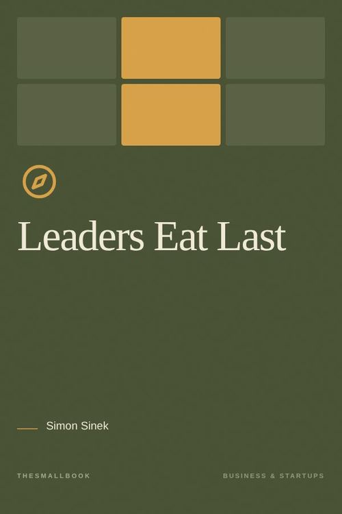

Library › Ask the Library › How do I become a better leader?
How do I become a better leader?
The short answer
Leadership is service with a bigger platform: protect your team, remove their obstacles, and own the failures publicly while giving away the credit. People follow those who carry weight, not those who collect titles. The best leaders are the ones who make themselves replaceable.
The books behind the answer

Leaders Eat Last
Simon Sinek · 2014 · 8 min · 6 lessons
In the Marines, officers eat after their men - and the men would die for them. Leadership is not rank; it's choosing to protect the people in your care.
- Leaders Sacrifice First: The leader's job is the team's safety, eat last, literally and figuratively.

Extreme Ownership
Jocko Willink & Leif Babin · 2015 · 8 min · 6 lessons
There are no bad teams, only bad leaders. Own everything in your world - the blame, the fix, and therefore the power.
- Own Everything: Every failure is yours to own, blame is a tax on trust.
High Output Management
Andy Grove · 1983 · 8 min · 6 lessons
A manager's output = the output of their team. Leverage, meetings, and performance reviews done right - the Grove way.
- Output Is the Metric: Manage by results, not activity, the output of your org is your output.
Questions people ask next
Can I read this in Hindi?
Yes. This answer is written in simple English. Open any linked book and choose Hindi or Hinglish to read the full lessons in your language, with audio where available.